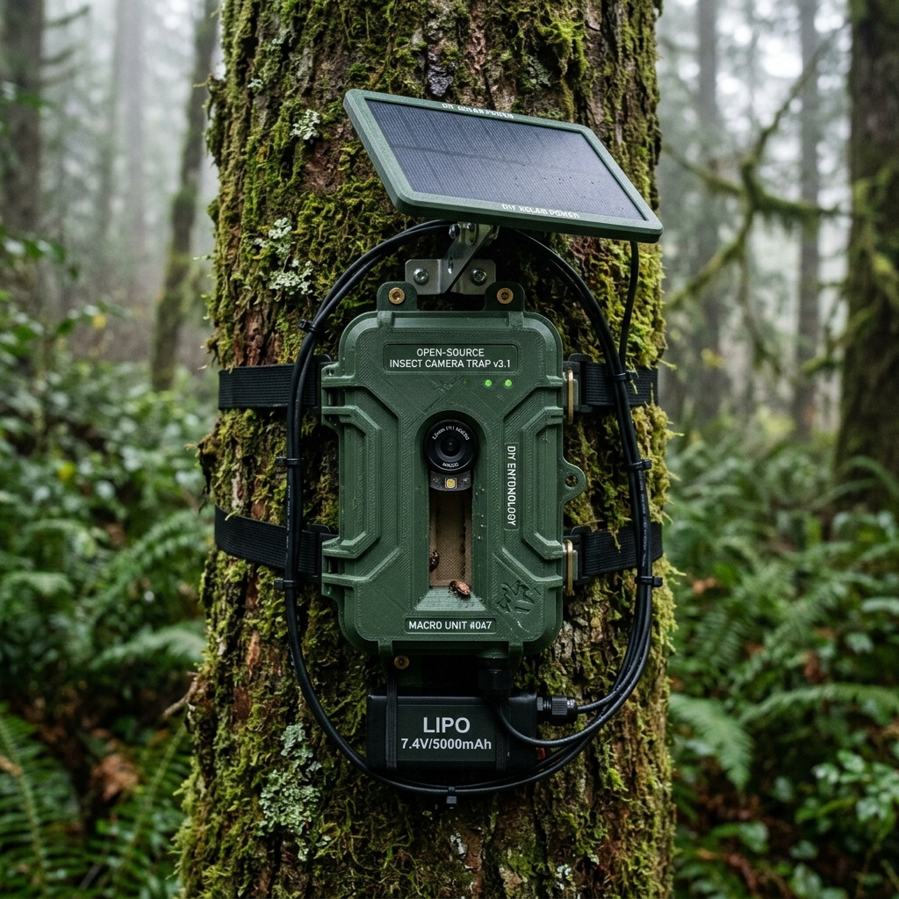
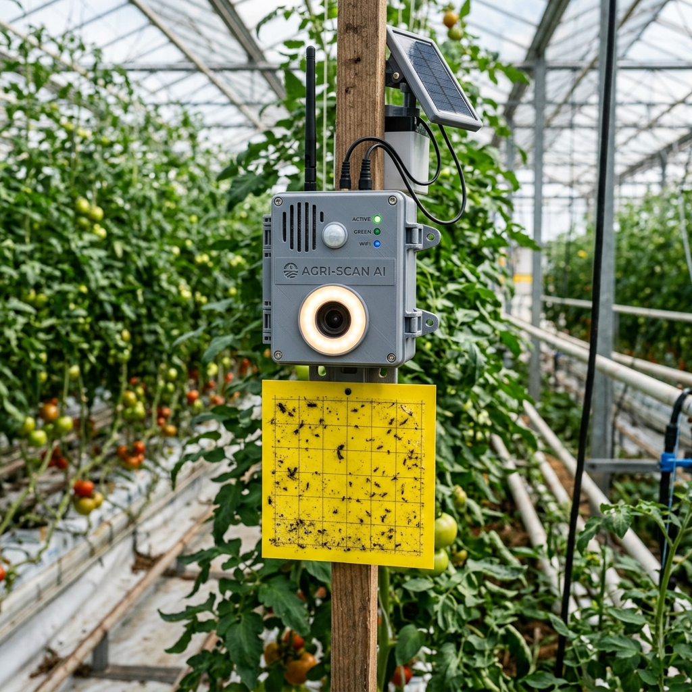
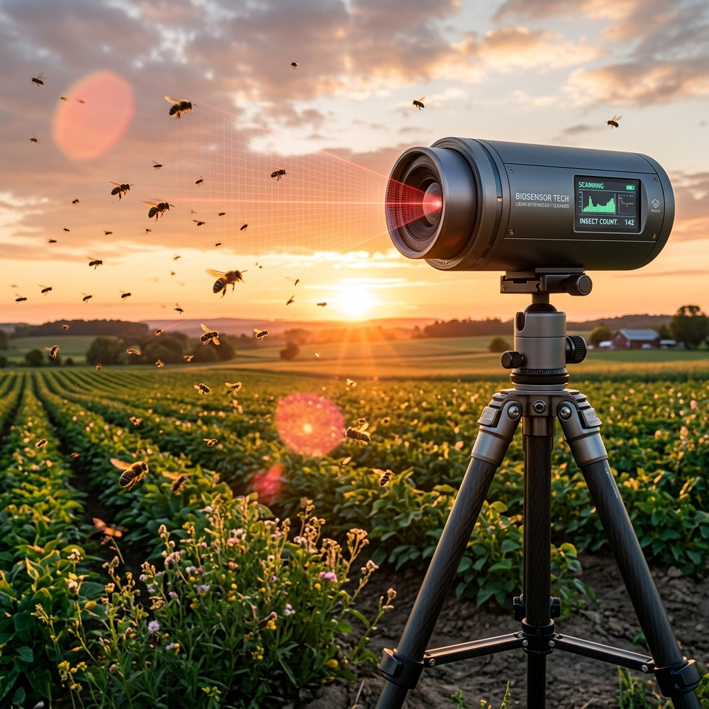
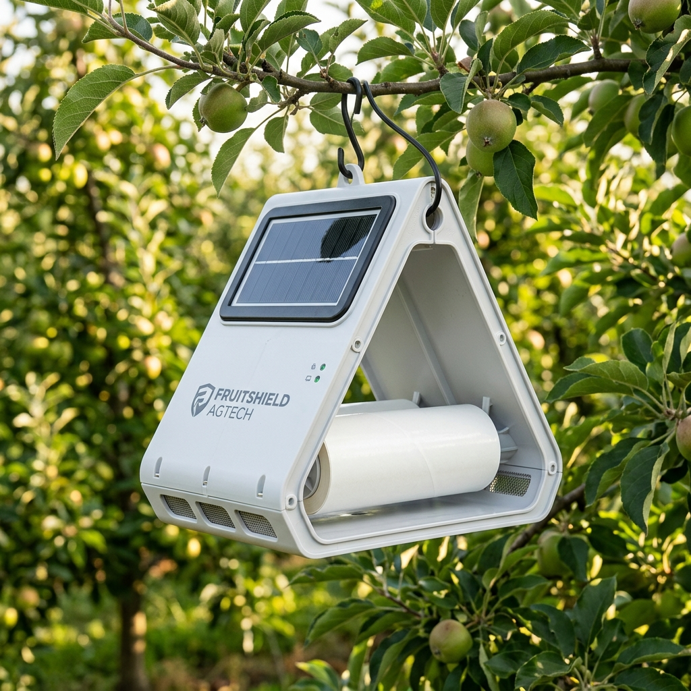
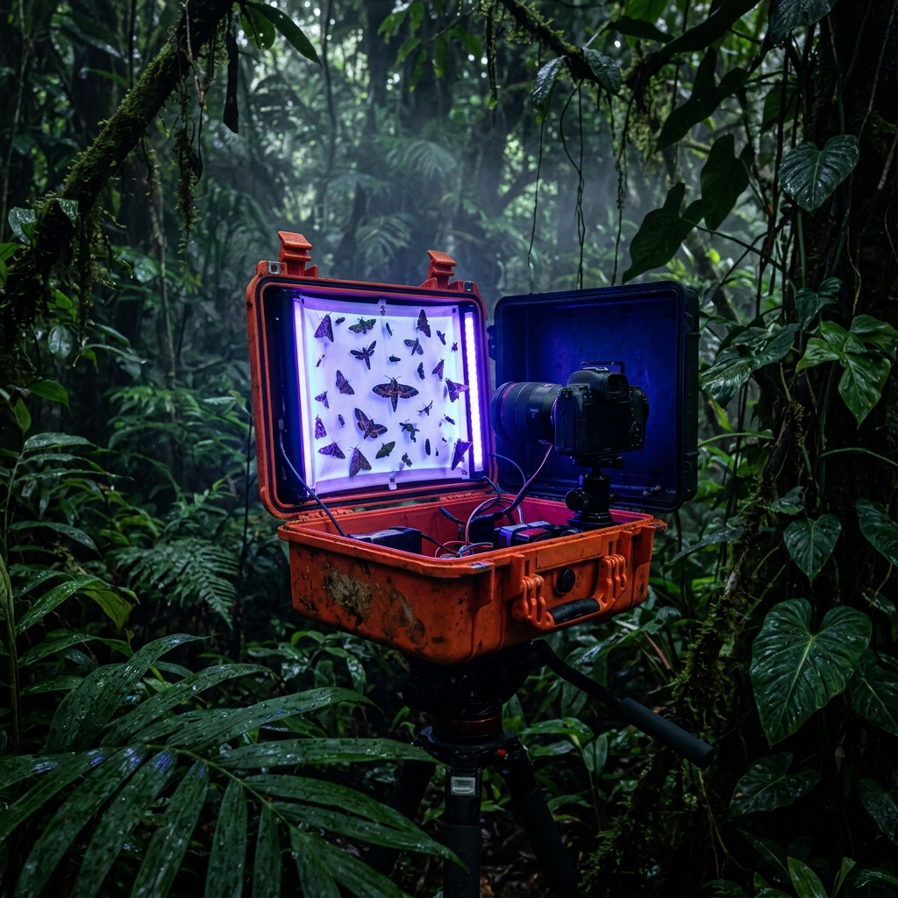
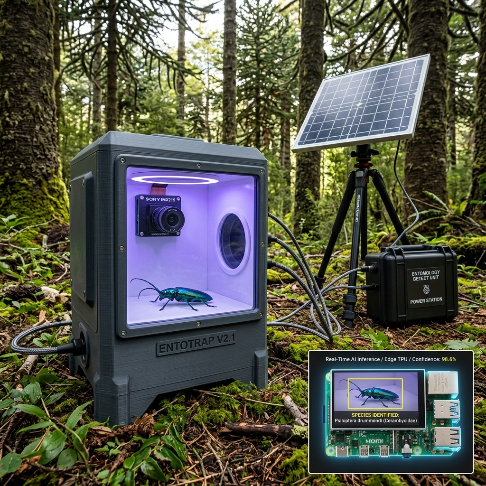
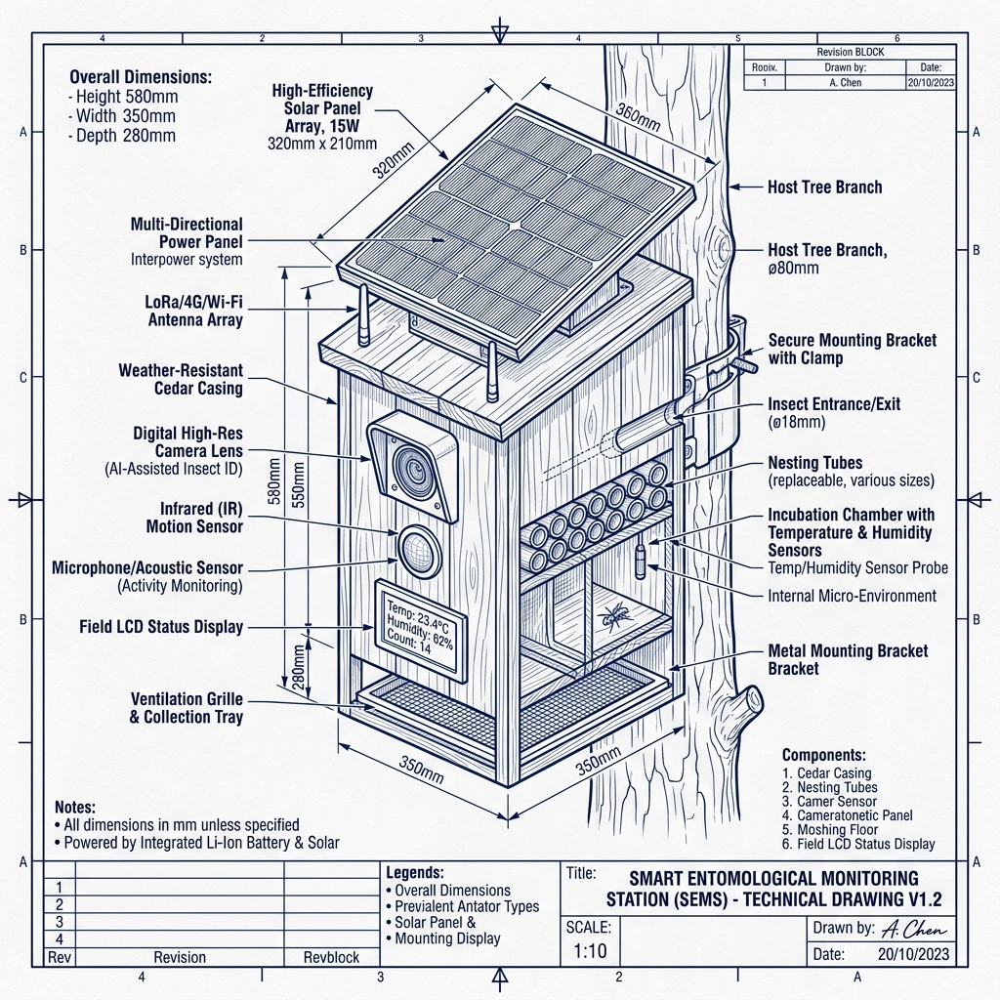
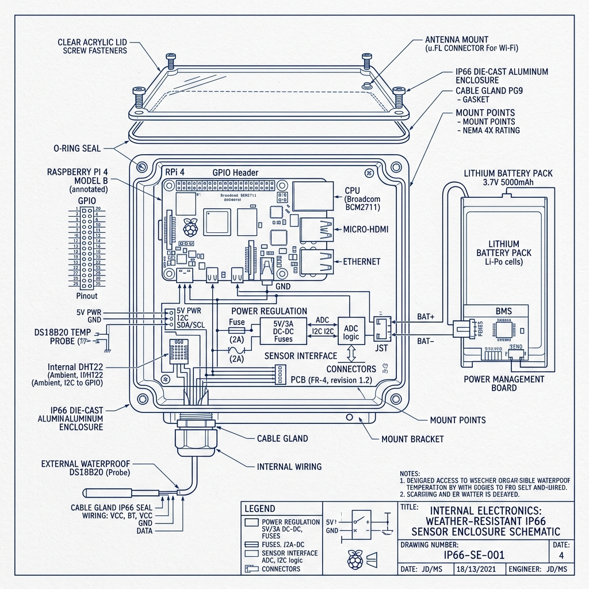
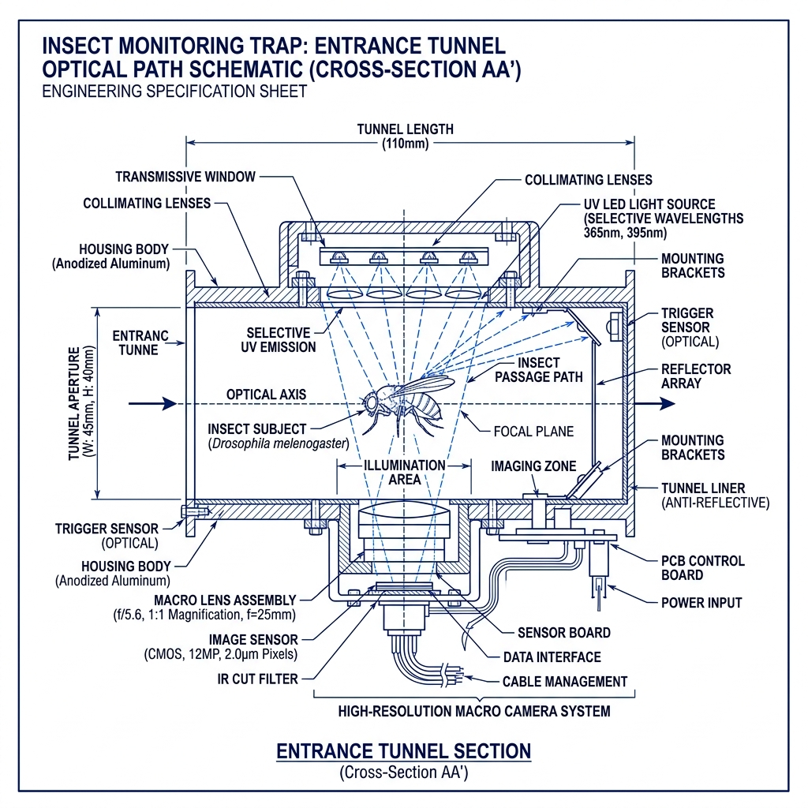

Título de la Idea
Solución de Diseño
Relevancia Ecológica
Evaluación de Impacto y Viabilidad
Propuestas de Diseño
Consenso Científico
Componentes Tecnológicos
Esta herramienta interactiva permite a científicos y diseñadores explorar propuestas ecológicas para la protección de la fauna nativa chilena.
Unión e interacción interespecie. Haz clic en las tarjetas de oportunidades para focalizar.
Desafíos prioritarios de conservación. Explora las ideas asociadas en cada área temática.
Análisis y evaluaciones científicas. Haz clic en cualquier idea para ver desgloses y evaluaciones.
Cargando bases de datos del ecosistema...
Biodiversidad • Diseño
"¿Cómo podríamos proteger a los insectos polinizadores nativos de las reservas andinas y valles interiores de Chile central frente a las heladas extremas invernales causadas por el cambio climático...?"
"¿Cómo podríamos implementar una red de monitoreo entomológico inteligente de Chile central y sur que identifique insectos clave (plagas, vectores y polinizadores) para la detección temprana de brotes y la conservación ecológica?"
"¿Cómo podríamos integrar micro-refugios de infraestructura verde sensorizada y herramientas digitales en comunas chilenas altamente densificadas para mitigar las islas de calor...?"
| ID | Oportunidad | Título y Propuesta | Consenso | Ficha |
|---|
Ecosistemas de monitoreo entomológico inteligente que inspiran el diseño de hardware, software y las metodologías de conservación científica de la trampa inteligente BICHOS.

Cámara trampa automatizada y de bajo costo para el monitoreo pasivo de insectos basada en computación en el borde y visión artificial local.

Dispositivo de monitoreo inteligente que digitaliza trampas adhesivas tradicionales a intervalos fijos para análisis circadiano automatizado.

Sensores remotos de precisión física y biosensado molecular para la cuantificación y diagnóstico de especies biológicas en vuelo.

Sistema comercial líder mundial en monitoreo de plagas mediante trampas solares sensorizadas y análisis predictivo en la nube.

Trampa fotográfica nocturna de código abierto para la catalogación masiva y económica de polillas en bosques tropicales profundos.
Monitoreo automatizado y protección de biodiversidad forestal frente a plagas en la interfase silvoagropecuaria

"¿Cómo podríamos implementar una red de monitoreo entomológico inteligente de Chile central y sur que identifique insectos clave (plagas, vectores y polinizadores) para la detección temprana de brotes y la conservación ecológica?"
Foco Territorial: Monitoreo activo e in situ en la interfase silvoagropecuaria, donde los ecosistemas boscosos convergen con actividades agrícolas y ganaderas.
Actores Clave: Diseñado para empoderar a agricultores, científicos e instituciones fitosanitarias (como el SAG y CONAF) con alertas oportunas.
Mitigación Preventiva: Habilitar respuestas rápidas de aislamiento biológico antes de que ocurran daños devastadores al dosel forestal y pérdidas irreversibles.
Esta idea fue seleccionada unánimemente como la ganadora gracias a sus sobresalientes evaluaciones biológicas y tecnológicas de campo.
Este proyecto se origina a partir de la necesidad crítica de establecer un monitoreo in situ en la interfase silvoagropecuaria de Chile central y sur. Esta es una zona altamente vulnerable donde convergen predios de producción agropecuaria con bosques nativos y áreas protegidas expuestas al cambio climático y la sequía.
El propósito fundamental de la red es empoderar directamente a agricultores, científicos e instituciones fitosanitarias de protección (como el SAG y CONAF) entregando telemetría automatizada en tiempo real. Esto permite coordinar aislamientos biológicos y tratamientos antes de que ocurran daños al dosel forestal y pérdidas ecológicas o productivas de carácter irreversible.
Es una trampa inteligente in situ de precisión científica. Cuenta con una cámara de alta resolución a nivel del suelo o tronco, iluminación LED optimizada con espectros específicos para atraer insectos y un microcomputador en el dispositivo (Edge AI, como Raspberry Pi y el acelerador de hardware Google Coral TPU).
Esta arquitectura le permite ejecutar de forma autónoma redes neuronales convolucionales optimizadas (YOLO Lite, MobileNet) para la clasificación de imágenes entomológicas en tiempo real, operando sin necesidad de conexión permanente a la nube o costosos envíos de datos pesados.
Está dirigida a instituciones públicas de protección silvoagropecuaria e investigación (como el SAG y CONAF), biólogos y entomólogos de campo, administradores forestales y agricultores que poseen predios en zonas de interfase.
Facilita una herramienta automatizada y confiable para monitorizar de manera pasiva el estado del ecosistema forestal y disparar alarmas inmediatas ante amenazas biológicas, eliminando la necesidad de recolecciones manuales de campo tardías y costosas.
Se instalará en los bordes boscosos de parques nacionales, áreas silvestres protegidas y zonas agrícolas limítrofes en el centro y sur de Chile.
Es especialmente crítica en corredores forestales amenazados por la sequía profunda, donde el dosel de Araucarias, Robles o Lenga se encuentra debilitado y es propenso a brotes masivos de insectos barrenadores saproxílicos (familias Cerambycidae y Scolytinae).
La estación se fija a postes, estacas o troncos. Funciona de manera 100% autónoma alimentada por energía solar. Los insectos son atraídos al compartimento de tránsito por la iluminación LED. Al ingresar, la cámara toma capturas rápidas, y el chip Edge AI las clasifica de inmediato.
Si identifica una especie objetivo (invasora o plaga), envía una alerta geolocalizada con la imagen adjunta vía red celular 4G LTE o LoRaWAN al centro de control. Si detecta fauna nativa benéfica, solo registra el metadato estadístico para ciencia ciudadana y libera al insecto, optimizando el uso de energía y ancho de banda al mínimo.
Aborda directamente la brecha de detección temprana. En lugar de registrar la plaga cuando el árbol ya presenta defoliación letal y muerte del dosel, la estación inteligente detecta a los insectos adultos en su fase inicial de vuelo y colonización activa.
Al proveer alertas geolocalizadas automáticas en tiempo real en áreas de difícil acceso rural, permite al SAG y CONAF coordinar aislamientos biológicos preventivos en días en vez de meses, reduciendo drásticamente la huella de carbono y los recursos económicos requeridos para el control de plagas forestales.
Lista interactiva de parámetros críticos validados para garantizar el flujo constante de especímenes sin colonización permanente.
Ingeniería de Campo: El diseño original sugería madera nativa para el chasis exterior por motivos ecológicos. No obstante, las pruebas biológicas obligan a una corrección estructural de diseño:
Especificaciones biomecánicas entomológicas formuladas para forzar el tránsito voluntario de insectos frente a la lente macro de la estación inteligente. Al diseñar superficies hostiles para la anidación pero amigables para el tránsito, se garantiza la recolección masiva de muestras de imágenes sin dañar a las poblaciones ni comprometer el hardware.
El chasis exterior es un túnel vertical abierto de HDPE o aluminio anodizado. El conducto interno está optimizado para obligar al insecto a transitar a través del plano focal cerrado del sistema macro.
Las lentes macro de precisión f/8 poseen una profundidad de campo de tan solo **~8 mm**. La rampa de 1.5 cm de profundidad se complementa con un perfil transversal ligeramente cóncavo, forzando a los insectos a mantenerse a una distancia de **±4 mm** de la lente, evitando capturas borrosas o fuera de foco.
Para evitar que avispas alfareras o abejas solitarias sellen el canal con barro o resinas, la rampa central se diseña para proveer tracción tarsal sin ofrecer cavidades o anclaje para materiales de nido.
Al sellar las esquinas internas de tránsito para evitar telarañas de araña, **debe utilizarse exclusivamente silicona neutra para exteriores**. Las siliconas acéticas convencionales liberan ácido acético volátil durante su curado, lo cual corroe irreparablemente las placas electrónicas (Raspberry Pi/Coral TPU) y sensores ópticos confinados.
La colonización biológica de estaciones de campo ocurre por la búsqueda de microclimas húmedos y cálidos protegidos del viento. Romper este confort expulsa permanentemente a los nidificadores.
El diseño aerodinámico del túnel de viento incorpora un alero deflector superior tipo visera. Esto permite que las corrientes de aire pasen a gran velocidad para refrescar la recámara, pero bloquea y desvía la entrada de gotas de lluvia inclinadas por el viento, evitando manchas de cal y suciedad en el cristal óptico de la cámara.
En ausencia de atrayentes químicos volátiles de corta duración, se utiliza el sistema de navegación visual y táctil del insecto para guiarlo hacia el pasillo focal.
El fondo gris mate y homogéneo del canal permite implementar un algoritmo ligero de *diferencia de fotogramas* ejecutado en un procesador auxiliar de muy bajo consumo. La Raspberry Pi principal y el colador de red neuronal TPU se mantienen en suspensión profunda (*deep sleep*), despertando en microsegundos y activando la inferencia únicamente cuando detectan una silueta de contraste en tránsito, reduciendo el consumo eléctrico solar en un **75%**.
Esquemas de fabricación e ingeniería dimensional generados para la validación y ensamble de la Estación Entomológica Inteligente. La estación combina materiales bio-compuestos con aislamiento térmico pasivo de alta inercia para asegurar la protección activa del hardware en condiciones de intemperie forestal severa. Haz clic en cualquier croquis técnico para abrir la vista en alta definición.

Modelado general del chasis exterior fabricado en madera de Roble Hualo y sus sistemas de acoplamiento.

Planificación y aislamiento térmico de la instrumentación IoT, microcomputador y almacenamiento de energía.

Diseño detallado del cono de tránsito, iluminación cromática selectiva y posicionamiento de cámara macro.
Análisis del ecosistema material del dispositivo. Hemos seleccionado materiales con una huella ecológica reducida, alta resistencia ante climas adversos cordilleranos y propiedades aislantes térmicas pasivas.
Estructura y chasis principal exterior. Tratada con aceites naturales (linaza) para soportar la humedad extrema y lluvia del bosque templado. Ofrece integración estética orgánica en el dosel y alta biodegradabilidad.
Recubrimiento interior térmico del habitáculo electrónico. Proporciona un coeficiente de aislamiento superior, protegiendo la Raspberry Pi y las baterías LiFePO4 de heladas extremas invernales y calor intenso.
Lente protectora y ventana de tránsito óptico para la cámara. Cuenta con tratamiento antirreflejo y antiempañante para garantizar capturas ultra nítidas e inalteradas por la condensación matutina.
Conductos de entrada cónicos, rejillas y soportes de cámara internos impresos en 3D. El PETG proporciona alta tenacidad, resistencia al impacto y protección UV extrema en campo.
Anclajes de fijación a troncos no invasivos mediante correas de poliuretano, bisagras y tornillería de sellado del compartimento principal. Evita la corrosión salina e hidrológica forestal.
Combinación equilibrada de técnicas tradicionales de ebanistería local con automatización digital e impresión aditiva de grado industrial.
Utilizado para troquelar los paneles de madera nativa de Roble Hualo del chasis exterior. Permite ensambles machihembrados perfectos con tolerancias de décimas de milímetro y grabado estético de códigos QR.
Tallado tridimensional de canales de drenaje de aguas lluvias en las cubiertas de madera y cajeado interno para alojar los sellos elásticos del compartimento técnico estanco.
Fabricación de conductos cónicos internos de ingreso de insectos y soportes angulares del módulo óptico (cámara + lentes), permitiendo diseñar geometrías aerodinámicas muy difíciles de mecanizar.
Lijado manual grano fino, ensamble de bisagras y aplicación térmica del tratamiento protector de aceite. Colocación manual de burletes de goma de silicona para garantizar la hermeticidad IP66 final.